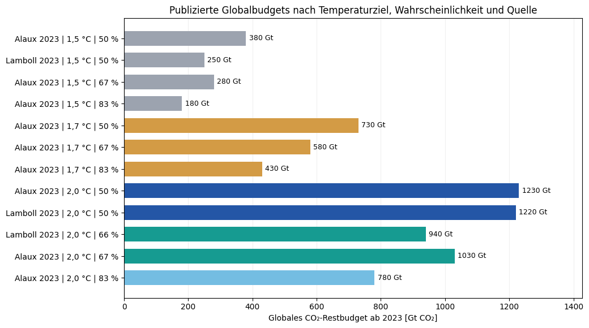
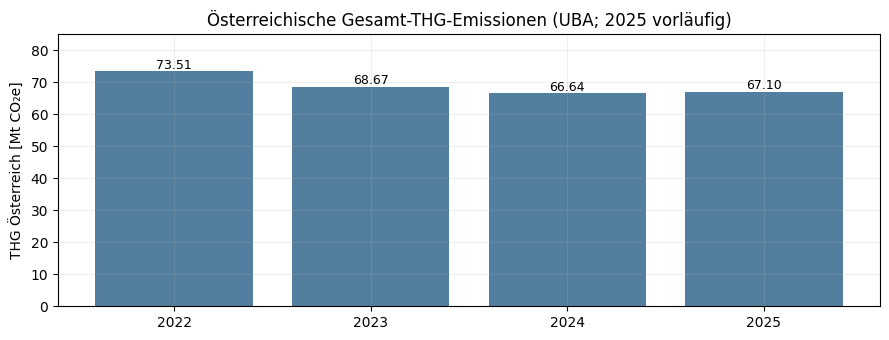
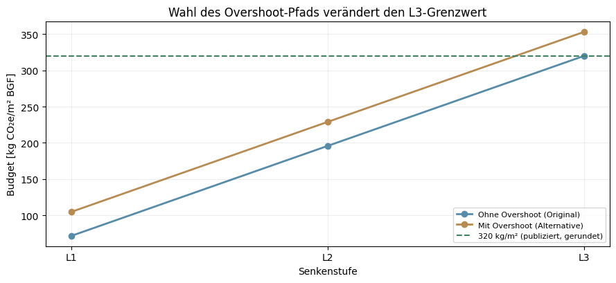
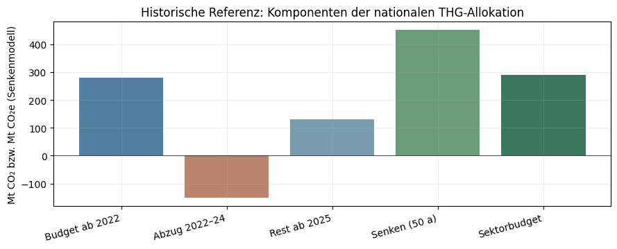
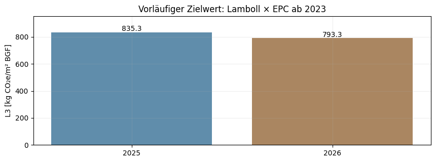
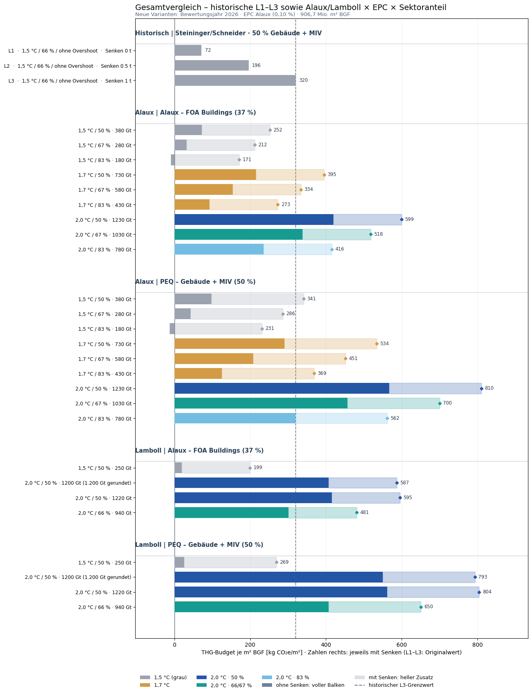
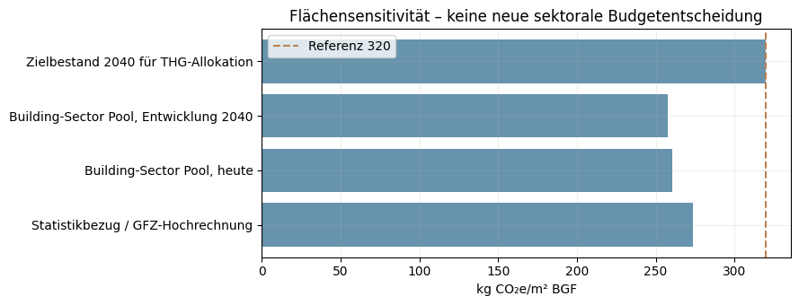
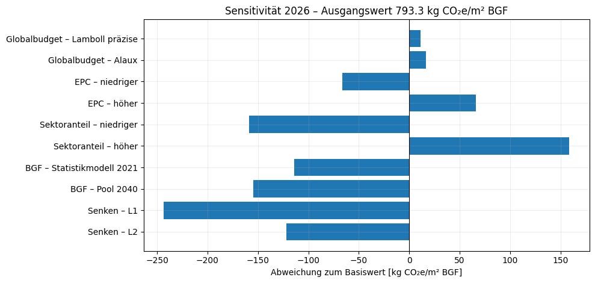
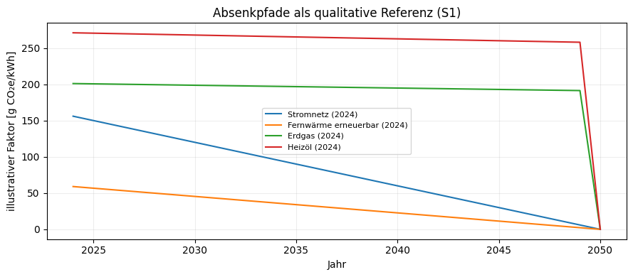

flowchart TB
B["Globales Restbudget ab 2023<br/>Lamboll oder Alaux<br/>Temperaturziel und Wahrscheinlichkeit"]
A["Pro-Kopf-Allokation EPC<br/>0,10 % oder AT/Welt 2023"]
N["AT-Budget ab Referenzjahr [Mt CO2]"]
U["UBA: Emissionen Referenzjahr bis t-1<br/>CO2e-Näherung"]
R["Restbudget Österreich im Bewertungsjahr"]
S["Natürliche Senken: 0 oder 1 t pro Person und Jahr<br/>über verbleibende Jahre"]
F["Alaux: 37 % FOA Buildings"]
P["PEQ: 50 % Gebäude + MIV"]
G["Division durch nationale BGF<br/>kg CO2e je m² BGF"]
H["Historisch: Steininger/Schneider L1–L3<br/>Ab 2025, 50 % Gebäude + MIV"]
V["Gemeinsamer Szenarienvergleich"]
B --> A --> N --> R
U --> R
R --> S
S --> F --> G
S --> P --> G
G --> V
H --> V
classDef base fill:#e9eff7,stroke:#6b829b,color:#26384e
classDef output fill:#dfeeea,stroke:#37927e,color:#1b5448
class B,A,N,U,R,S,F,P,H base
class G,V output
Anhang D — THG-Zielwert – interner Sektorvergleich
Steininger, Alaux und Lamboll · 37 % FOA vs. 50 % Gebäude + MIV
THG-Zielwert – interne Szenarien- und Sektorvergleichsrechnung
Diskussionsstand 11.11.2026 · historische Referenz / Alaux FOA 37 % / PEQ Gebäude + MIV 50 %
Parametrische Vergleichsrechnung. Die Kernergebnisse werden im letzten gemeinsamen Diagramm dargestellt.
Datengrundlagen: Schneider et al. (2025), Tab. A1 · Steininger et al. (2022) · Lamboll et al. (2023) · Alaux et al. (2023) · Umweltbundesamt, Inventar 2026 / NowCast 2025.
Dateien: thg_nationale_klimabudgets.csv, thg_globale_budgets_kontext.csv, thg_historische_emissionen_AT.csv, thg_historische_aggregatannahmen.csv.
Die Werte und Annahmen werden in den nachfolgenden Eingabezellen gewählt; Änderungen danach mit Run All berechnen.
Ablauf der neuen Kalibrierung
HinweisBewertungsstand
Die historische Referenz wird ab 2025 gezeigt, die neuen Szenarien im wählbaren Jahr COMPARISON_YEAR (Voreinstellung 2026). Gleiche BGF und Senkenjahre erlauben eine Sensitivitätsbetrachtung, die Quellenstände bleiben separat.
Arbeitsstand 0.4.0-intern-sektorvergleich | Python 3.13.5 | pandas 2.2.31. Eingangsbudgets und historische Emissionen
Die vier CSV-Tabellen können neben dem Notebook liegen und dort angepasst werden. Ohne CSV-Dateien greifen die im Notebook eingebetteten Ausgangswerte.
CSV: thg_nationale_klimabudgets.csv
CSV: thg_historische_emissionen_AT.csv
CSV: thg_historische_aggregatannahmen.csv
CSV: thg_globale_budgets_kontext.csv| budget_id | temperatur | overshoot | wahrscheinlichkeit_pct | referenzjahr | national_budget_Mt | quelle_id | |
|---|---|---|---|---|---|---|---|
| 0 | STEIN2022_15_NO_50 | 1,5 °C | ohne | 50 | 2022 | 510.0 | S1-A1 |
| 1 | STEIN2022_15_NO_66 | 1,5 °C | ohne | 66 | 2022 | 280.0 | S1-A1 |
| 2 | STEIN2022_15_YES_50 | 1,5 °C | mit | 50 | 2022 | 610.0 | S1-A1 |
| 3 | STEIN2022_15_YES_66 | 1,5 °C | mit | 66 | 2022 | 340.0 | S1-A1 |
| 4 | LAMBOLL2023_AT_15_50 | 1,5 °C | nicht festgelegt | 50 | 2023 | NaN | S6 |
| 5 | LAMBOLL2023_AT_15_66 | 1,5 °C | nicht festgelegt | 66 | 2023 | NaN | S6 |
| 6 | LAMBOLL2023_AT_20_50 | 2,0 °C | nicht festgelegt | 50 | 2023 | NaN | S6+S9 |
| 7 | LAMBOLL2023_AT_20_66 | 2,0 °C | nicht festgelegt | 66 | 2023 | NaN | S6 |
| quelle | temperatur | wahrscheinlichkeit_pct | referenzjahr | global_budget_Gt | quelle_id | |
|---|---|---|---|---|---|---|
| 3 | Alaux 2023 | 1,5 °C | 50 | 2023 | 380 | S9 |
| 0 | Lamboll 2023 | 1,5 °C | 50 | 2023 | 250 | S6 |
| 4 | Alaux 2023 | 1,5 °C | 67 | 2023 | 280 | S9 |
| 5 | Alaux 2023 | 1,5 °C | 83 | 2023 | 180 | S9 |
| 6 | Alaux 2023 | 1,7 °C | 50 | 2023 | 730 | S9 |
| 7 | Alaux 2023 | 1,7 °C | 67 | 2023 | 580 | S9 |
| 8 | Alaux 2023 | 1,7 °C | 83 | 2023 | 430 | S9 |
| 9 | Alaux 2023 | 2,0 °C | 50 | 2023 | 1230 | S9 |
| 1 | Lamboll 2023 | 2,0 °C | 50 | 2023 | 1220 | S6 |
| 2 | Lamboll 2023 | 2,0 °C | 66 | 2023 | 940 | S6 |
| 10 | Alaux 2023 | 2,0 °C | 67 | 2023 | 1030 | S9 |
| 11 | Alaux 2023 | 2,0 °C | 83 | 2023 | 780 | S9 |

| jahr | reihe | emissionen_Mt | einheit | quelle_id | datenstatus | |
|---|---|---|---|---|---|---|
| 0 | 2022 | CO2_TERRITORIAL | NaN | Mt CO2 | S7 | offen; CO2-Jahreswert fehlt |
| 1 | 2023 | CO2_TERRITORIAL | NaN | Mt CO2 | S7 | offen; CO2-Jahreswert fehlt |
| 2 | 2024 | CO2_TERRITORIAL | NaN | Mt CO2 | S7 | offen; CO2-Jahreswert fehlt |
| 3 | 2025 | CO2_TERRITORIAL | NaN | Mt CO2 | NaN | offen; für 2026-Budget notwendig |
| 4 | 2022 | GHG_TOTAL_EXCL_LULUCF | 73.506582 | Mt CO2e | S7 | kontext: NICHT CO2-Budget-kompatibel |
| 5 | 2023 | GHG_TOTAL_EXCL_LULUCF | 68.674060 | Mt CO2e | S7 | kontext: NICHT CO2-Budget-kompatibel |
| 6 | 2024 | GHG_TOTAL_EXCL_LULUCF | 66.637831 | Mt CO2e | S7 | kontext: NICHT CO2-Budget-kompatibel |
| 7 | 2025 | GHG_TOTAL_EXCL_LULUCF | 67.100000 | Mt CO2e | S8 | vorläufig; NICHT CO2-Budget-kompatibel |
| von_jahr | bis_jahr | reihe | emissionen_Mt | einheit | quelle_id | herleitung | hinweis | |
|---|---|---|---|---|---|---|---|---|
| 0 | 2022 | 2024 | CO2_TERRITORIAL | 150.0 | Mt CO2 | S1-A1 | Schneider et al. 2025, Tab. A1: 280-130 bzw. 340-190 | aggregierte historische Abzugsannahme; keine jährliche Inventarreihe |

2. Stellschrauben
Die Werte in der folgenden Codezelle ändern und die nachfolgenden Zellen erneut ausführen.
Globales Budget → Österreichisches Budget (EPC):| Globalquelle | Globalbudget [Gt CO₂] | EPC-Anteil [%] | AT-Budget [Mt CO₂] | Quelle | |
|---|---|---|---|---|---|
| 0 | Lamboll 2023 (gerundet, HAUPTLAUF) | 1200.0 | 0.1 | 1200.0 | S6 (Abstract) + S9 (EPC) |
| 1 | Lamboll 2023 (detaillierter Artikelwert) | 1220.0 | 0.1 | 1220.0 | S6 (Artikel) + S9 (EPC) |
| 2 | Alaux 2023 (andere globale Budgetquelle) | 1230.0 | 0.1 | 1230.0 | S9 (Tab. 1 und EPC) |
Lamboll gerundet 1200 Gt × EPC 0.100 % = 1200.0 Mt CO₂ (AT ab 2023)3. Rechenmodell
\[ B_{\mathrm{AT},r}=1000\,B_{\mathrm{global},r}\,f_{\mathrm{EPC}} \]
\[ B_{\mathrm{AT},t}=B_{\mathrm{AT},r}-\sum_{y=r}^{t-1}E_{\mathrm{AT},y} \]
\[ B_{\mathrm{Sektor},t}(s,\alpha)=\alpha\left(B_{\mathrm{AT},t}+P\,s\,(2075-t)\right) \]
\[ \boxed{b_{\mathrm{THG},t}(s,\alpha)=\frac{1000\,B_{\mathrm{Sektor},t}(s,\alpha)}{A_{\mathrm{BGF}}}} \]
Einheiten: global Gt CO₂, national und Sektor Mt, Bevölkerung Mio., Senken t CO₂e/(Person·a), Fläche Mio. m² BGF, Ergebnis kg CO₂e/m² BGF.
WichtigSektorgrenzen
37 % (Alaux): Field of Action Buildings als globale Budgetallokation für Lebenszyklusemissionen des Gebäudebestands. 50 % (PEQ): bisherige Budgetallokation auf Gebäude + MIV. Die Gegenüberstellung ist eine Sensitivitäts- und Systemgrenzenanalyse; die 37-%-Spalte ist kein publizierter PEQ-Grenzwert.
WarnungVorläufige Abzugs- und Senkenannahmen
Die jährlichen UBA-Werte sind gesamte THG in CO₂e ohne LULUCF. Ihr Abzug von CO₂-only-Budgets ist eine vorläufige Näherung. Zusätzliche natürliche Senken werden hier als eigene Modellannahme von 0 oder 1 t CO₂e je Person und Jahr angesetzt; Doppelzählung gegenüber globalen Budgetannahmen ist vor einer normativen Festlegung zu prüfen.
4. Historische Steininger-/Schneider-Kalibrierung (2025)
L1–L3: 1,5 °C / 66 % / ohne Overshoot; Senkenannahme L1 = 0, L2 = 0,5, L3 = 1 t CO₂e/(Person·a).
| budget_id | referenzjahr | bewertungsjahr | start_budget_Mt | historical_deduction_Mt | remaining_CO2_budget_Mt | level | senken_t_cap_a | additional_sinks_Mt | sector_budget_Mt | target_kgCO2e_m2_BGF | |
|---|---|---|---|---|---|---|---|---|---|---|---|
| 0 | STEIN2022_15_NO_66 | 2022 | 2025 | 280.0 | 150.0 | 130.0 | L1 | 0.0 | 0.0 | 65.0 | 71.688541 |
| 1 | STEIN2022_15_NO_66 | 2022 | 2025 | 280.0 | 150.0 | 130.0 | L2 | 0.5 | 225.0 | 177.5 | 195.764862 |
| 2 | STEIN2022_15_NO_66 | 2022 | 2025 | 280.0 | 150.0 | 130.0 | L3 | 1.0 | 450.0 | 290.0 | 319.841182 |
| 3 | STEIN2022_15_YES_66 | 2022 | 2025 | 340.0 | 150.0 | 190.0 | L1 | 0.0 | 0.0 | 95.0 | 104.775560 |
| 4 | STEIN2022_15_YES_66 | 2022 | 2025 | 340.0 | 150.0 | 190.0 | L2 | 0.5 | 225.0 | 207.5 | 228.851880 |
| 5 | STEIN2022_15_YES_66 | 2022 | 2025 | 340.0 | 150.0 | 190.0 | L3 | 1.0 | 450.0 | 320.0 | 352.928201 |

5. Lamboll × EPC – Bewertung 2025 / 2026
| budget_id | bewertungsjahr | referenzjahr | historischer_abzug_Mt | restbudget_Mt | L3_kgCO2e_m2_BGF | senkenjahre | abzug_reihe | status | |
|---|---|---|---|---|---|---|---|---|---|
| 0 | STEIN2022_15_NO_66 | 2025 | 2022 | 150.000000 | 130.000000 | 319.841182 | 50 | S1_aggregat | rechenbar |
| 1 | STEIN2022_15_NO_66 | 2026 | 2022 | NaN | NaN | NaN | 49 | S1_aggregat | Jahresemissionen fehlen: Jahr 2025 (Zeile CO2_TERRITORIAL). |
| 2 | STEIN2022_15_YES_66 | 2025 | 2022 | 150.000000 | 190.000000 | 352.928201 | 50 | S1_aggregat | rechenbar |
| 3 | STEIN2022_15_YES_66 | 2026 | 2022 | NaN | NaN | NaN | 49 | S1_aggregat | Jahresemissionen fehlen: Jahr 2025 (Zeile CO2_TERRITORIAL). |
| 4 | LAMBOLL2023_AT_20_50 | 2025 | 2023 | 135.311891 | 1064.688109 | 835.275234 | 50 | GHG_TOTAL_EXCL_LULUCF | ACHTUNG: Gesamt-THG in Mt CO2e von CO2-only-Budget abgezogen (Näherung); EPC-Allokation als Modellübe... |
| 5 | LAMBOLL2023_AT_20_50 | 2026 | 2023 | 202.411891 | 997.588109 | 793.309865 | 49 | GHG_TOTAL_EXCL_LULUCF | ACHTUNG: Gesamt-THG in Mt CO2e von CO2-only-Budget abgezogen (Näherung); EPC-Allokation als Modellübe... |
| budget_id | schritt | wert_Mt | quelle | |
|---|---|---|---|---|
| 0 | STEIN2022_15_NO_66 | 1 Ausgangsbudget ab Referenzjahr | 280.0 | S1-A1 |
| 1 | STEIN2022_15_NO_66 | 2 Historisch emittiert | -150.0 | S1-A1 |
| 2 | STEIN2022_15_NO_66 | 3 Verbleibendes Budget | 130.0 | Berechnung |
| 3 | STEIN2022_15_NO_66 | 4 Zusätzliche Senken | 450.0 | S1-A1 / Annahme |
| 4 | STEIN2022_15_NO_66 | 5 National mit Senken | 580.0 | Berechnung |
| 5 | STEIN2022_15_NO_66 | 6 Sektorbudget (50 %) | 290.0 | Berechnung |
| 6 | STEIN2022_15_YES_66 | 1 Ausgangsbudget ab Referenzjahr | 340.0 | S1-A1 |
| 7 | STEIN2022_15_YES_66 | 2 Historisch emittiert | -150.0 | S1-A1 |
| 8 | STEIN2022_15_YES_66 | 3 Verbleibendes Budget | 190.0 | Berechnung |
| 9 | STEIN2022_15_YES_66 | 4 Zusätzliche Senken | 450.0 | S1-A1 / Annahme |
| 10 | STEIN2022_15_YES_66 | 5 National mit Senken | 640.0 | Berechnung |
| 11 | STEIN2022_15_YES_66 | 6 Sektorbudget (50 %) | 320.0 | Berechnung |

Lamboll 2023 (gerundetes Globalbudget) × EPC nach Alaux (AT-Ausgangsbudget 1.200 Mt): UBA-Abzug als CO₂e-Näherung| Referenzjahr | Ausgangsbudget [Mt CO₂] | historischer UBA-THG-Abzug [Mt CO₂e] | Restbudget [Mt] (Näherung) | Senken [Mt] | Gebäude + MIV [Mt] | L3 [kg CO₂e/m² BGF] | Abzugsjahre | Quellen | |
|---|---|---|---|---|---|---|---|---|---|
| Bewertungsjahr | |||||||||
| 2025 | 2023 | 1200.0 | 135.312 | 1064.688 | 450.0 | 757.344 | 835.275 | 2023, 2024 | S7, S7 |
| 2026 | 2023 | 1200.0 | 202.412 | 997.588 | 441.0 | 719.294 | 793.310 | 2023, 2024, 2025 | S7, S7, S8 |

6. Globale Budgets × EPC – bisheriger Senkenvergleich
EPC Alaux (0,10 %) und AT/Welt (2023), jeweils ohne und mit Senken; die gemeinsame sektorale Auswertung folgt weiter unten.
Alternative Allokationsfaktoren – kein zusätzliches Bevölkerungsmodell:| Allokation | AT-Bevölkerung 2023 | Weltbevölkerung 2023 | AT-Anteil [%] | Quelle | |
|---|---|---|---|---|---|
| 0 | Alaux EPC (2023–2050, gerundet) | NaN | NaN | 0.100000 | S9; übertragener EPC-Faktor |
| 1 | World Bank 2023 (Jahresquote) | 9131761.0 | 8.062923e+09 | 0.113256 | S10 / S11; AT/Welt, 2023 |
Alle Klimabudgets – AT-Allokation und Senkenvergleich zum 1.1.2026:| Szenario | Global [Gt CO₂] | Allokation | AT-Anteil [%] | AT-Budget [Mt CO₂] | UBA-Abzug [Mt CO₂e] | Rest [Mt] | Ziel ohne Senken [kg/m²] | Ziel mit Senken [kg/m²] | Differenz Senken [kg/m²] | |
|---|---|---|---|---|---|---|---|---|---|---|
| 1 | Lamboll gerundet | 2,0 °C | 50 % | 1200.0 | EPC Alaux (0,10 %) | 0.10 | 1200.00 | 202.41 | 997.59 | 550.12 | 793.31 | 243.19 |
| 3 | Lamboll gerundet | 2,0 °C | 50 % | 1200.0 | AT/Welt (2023) | 0.11 | 1359.07 | 202.41 | 1156.66 | 637.84 | 881.03 | 243.19 |
| 5 | Lamboll 2023 | 1,5 °C | 50 % | 250.0 | EPC Alaux (0,10 %) | 0.10 | 250.00 | 202.41 | 47.59 | 26.24 | 269.43 | 243.19 |
| 7 | Lamboll 2023 | 1,5 °C | 50 % | 250.0 | AT/Welt (2023) | 0.11 | 283.14 | 202.41 | 80.73 | 44.52 | 287.71 | 243.19 |
| 9 | Lamboll 2023 | 2,0 °C | 50 % | 1220.0 | EPC Alaux (0,10 %) | 0.10 | 1220.00 | 202.41 | 1017.59 | 561.15 | 804.34 | 243.19 |
| 11 | Lamboll 2023 | 2,0 °C | 50 % | 1220.0 | AT/Welt (2023) | 0.11 | 1381.73 | 202.41 | 1179.31 | 650.33 | 893.52 | 243.19 |
| 13 | Lamboll 2023 | 2,0 °C | 66 % | 940.0 | EPC Alaux (0,10 %) | 0.10 | 940.00 | 202.41 | 737.59 | 406.74 | 649.93 | 243.19 |
| 15 | Lamboll 2023 | 2,0 °C | 66 % | 940.0 | AT/Welt (2023) | 0.11 | 1064.61 | 202.41 | 862.20 | 475.46 | 718.65 | 243.19 |
| 17 | Alaux 2023 | 1,5 °C | 50 % | 380.0 | EPC Alaux (0,10 %) | 0.10 | 380.00 | 202.41 | 177.59 | 97.93 | 341.12 | 243.19 |
| 19 | Alaux 2023 | 1,5 °C | 50 % | 380.0 | AT/Welt (2023) | 0.11 | 430.37 | 202.41 | 227.96 | 125.71 | 368.90 | 243.19 |
| 21 | Alaux 2023 | 1,5 °C | 67 % | 280.0 | EPC Alaux (0,10 %) | 0.10 | 280.00 | 202.41 | 77.59 | 42.79 | 285.98 | 243.19 |
| 23 | Alaux 2023 | 1,5 °C | 67 % | 280.0 | AT/Welt (2023) | 0.11 | 317.12 | 202.41 | 114.71 | 63.25 | 306.44 | 243.19 |
| 25 | Alaux 2023 | 1,5 °C | 83 % | 180.0 | EPC Alaux (0,10 %) | 0.10 | 180.00 | 202.41 | -22.41 | -12.36 | 230.83 | 243.19 |
| 27 | Alaux 2023 | 1,5 °C | 83 % | 180.0 | AT/Welt (2023) | 0.11 | 203.86 | 202.41 | 1.45 | 0.80 | 243.99 | 243.19 |
| 29 | Alaux 2023 | 1,7 °C | 50 % | 730.0 | EPC Alaux (0,10 %) | 0.10 | 730.00 | 202.41 | 527.59 | 290.94 | 534.13 | 243.19 |
| 31 | Alaux 2023 | 1,7 °C | 50 % | 730.0 | AT/Welt (2023) | 0.11 | 826.77 | 202.41 | 624.36 | 344.30 | 587.49 | 243.19 |
| 33 | Alaux 2023 | 1,7 °C | 67 % | 580.0 | EPC Alaux (0,10 %) | 0.10 | 580.00 | 202.41 | 377.59 | 208.22 | 451.41 | 243.19 |
| 35 | Alaux 2023 | 1,7 °C | 67 % | 580.0 | AT/Welt (2023) | 0.11 | 656.89 | 202.41 | 454.47 | 250.62 | 493.81 | 243.19 |
| 37 | Alaux 2023 | 1,7 °C | 83 % | 430.0 | EPC Alaux (0,10 %) | 0.10 | 430.00 | 202.41 | 227.59 | 125.50 | 368.69 | 243.19 |
| 39 | Alaux 2023 | 1,7 °C | 83 % | 430.0 | AT/Welt (2023) | 0.11 | 487.00 | 202.41 | 284.59 | 156.94 | 400.13 | 243.19 |
| 41 | Alaux 2023 | 2,0 °C | 50 % | 1230.0 | EPC Alaux (0,10 %) | 0.10 | 1230.00 | 202.41 | 1027.59 | 566.66 | 809.85 | 243.19 |
| 43 | Alaux 2023 | 2,0 °C | 50 % | 1230.0 | AT/Welt (2023) | 0.11 | 1393.05 | 202.41 | 1190.64 | 656.58 | 899.77 | 243.19 |
| 45 | Alaux 2023 | 2,0 °C | 67 % | 1030.0 | EPC Alaux (0,10 %) | 0.10 | 1030.00 | 202.41 | 827.59 | 456.37 | 699.56 | 243.19 |
| 47 | Alaux 2023 | 2,0 °C | 67 % | 1030.0 | AT/Welt (2023) | 0.11 | 1166.54 | 202.41 | 964.13 | 531.67 | 774.86 | 243.19 |
| 49 | Alaux 2023 | 2,0 °C | 83 % | 780.0 | EPC Alaux (0,10 %) | 0.10 | 780.00 | 202.41 | 577.59 | 318.51 | 561.70 | 243.19 |
| 51 | Alaux 2023 | 2,0 °C | 83 % | 780.0 | AT/Welt (2023) | 0.11 | 883.40 | 202.41 | 680.99 | 375.53 | 618.72 | 243.19 |
Lamboll-Budgetvarianten – beide Jahre und beide Bevölkerungsquoten:| Szenario | Bewertungsjahr | Allokation | AT-Budget [Mt CO₂] | Rest [Mt] | Ziel ohne Senken [kg/m²] | Ziel mit Senken [kg/m²] | |
|---|---|---|---|---|---|---|---|
| 0 | Lamboll gerundet | 2,0 °C | 50 % | 2025 | EPC Alaux (0,10 %) | 1200.0 | 1064.7 | 587.1 | 835.3 |
| 1 | Lamboll gerundet | 2,0 °C | 50 % | 2026 | EPC Alaux (0,10 %) | 1200.0 | 997.6 | 550.1 | 793.3 |
| 2 | Lamboll gerundet | 2,0 °C | 50 % | 2025 | AT/Welt (2023) | 1359.1 | 1223.8 | 674.8 | 923.0 |
| 3 | Lamboll gerundet | 2,0 °C | 50 % | 2026 | AT/Welt (2023) | 1359.1 | 1156.7 | 637.8 | 881.0 |
| 4 | Lamboll 2023 | 1,5 °C | 50 % | 2025 | EPC Alaux (0,10 %) | 250.0 | 114.7 | 63.2 | 311.4 |
| 5 | Lamboll 2023 | 1,5 °C | 50 % | 2026 | EPC Alaux (0,10 %) | 250.0 | 47.6 | 26.2 | 269.4 |
| 6 | Lamboll 2023 | 1,5 °C | 50 % | 2025 | AT/Welt (2023) | 283.1 | 147.8 | 81.5 | 329.7 |
| 7 | Lamboll 2023 | 1,5 °C | 50 % | 2026 | AT/Welt (2023) | 283.1 | 80.7 | 44.5 | 287.7 |
| 8 | Lamboll 2023 | 2,0 °C | 50 % | 2025 | EPC Alaux (0,10 %) | 1220.0 | 1084.7 | 598.2 | 846.3 |
| 9 | Lamboll 2023 | 2,0 °C | 50 % | 2026 | EPC Alaux (0,10 %) | 1220.0 | 1017.6 | 561.1 | 804.3 |
| 10 | Lamboll 2023 | 2,0 °C | 50 % | 2025 | AT/Welt (2023) | 1381.7 | 1246.4 | 687.3 | 935.5 |
| 11 | Lamboll 2023 | 2,0 °C | 50 % | 2026 | AT/Welt (2023) | 1381.7 | 1179.3 | 650.3 | 893.5 |
| 12 | Lamboll 2023 | 2,0 °C | 66 % | 2025 | EPC Alaux (0,10 %) | 940.0 | 804.7 | 443.7 | 691.9 |
| 13 | Lamboll 2023 | 2,0 °C | 66 % | 2026 | EPC Alaux (0,10 %) | 940.0 | 737.6 | 406.7 | 649.9 |
| 14 | Lamboll 2023 | 2,0 °C | 66 % | 2025 | AT/Welt (2023) | 1064.6 | 929.3 | 512.5 | 760.6 |
| 15 | Lamboll 2023 | 2,0 °C | 66 % | 2026 | AT/Welt (2023) | 1064.6 | 862.2 | 475.5 | 718.6 |
Hauptfall 1.200 Gt – alle vier Kombinationen aus Jahr und Allokationsfaktor:| Bewertungsjahr | Allokation | AT-Anteil [%] | AT-Budget [Mt CO₂] | UBA-Abzug [Mt CO₂e] | Rest [Mt] | Senkenjahre | Zus. Senken [Mt] | Ziel ohne Senken [kg/m²] | Ziel mit Senken [kg/m²] | Differenz Senken [kg/m²] | |
|---|---|---|---|---|---|---|---|---|---|---|---|
| 0 | 2025 | EPC Alaux (0,10 %) | 0.10 | 1200.00 | 135.31 | 1064.69 | 50 | 450.0 | 587.12 | 835.28 | 248.15 |
| 1 | 2026 | EPC Alaux (0,10 %) | 0.10 | 1200.00 | 202.41 | 997.59 | 49 | 441.0 | 550.12 | 793.31 | 243.19 |
| 2 | 2025 | AT/Welt (2023) | 0.11 | 1359.07 | 135.31 | 1223.76 | 50 | 450.0 | 674.84 | 923.00 | 248.15 |
| 3 | 2026 | AT/Welt (2023) | 0.11 | 1359.07 | 202.41 | 1156.66 | 49 | 441.0 | 637.84 | 881.03 | 243.19 |
Hinweis: UBA-Gesamt-THG (CO₂e) als Abzug von CO₂-only-Budget = vorläufige Näherung; Senken sind eine zusätzliche Modellannahme, kein beobachteter jährlicher Netto-Entzug.7. Gemeinsamer Vergleich aller Szenarien
Hauptdarstellung: EPC nach Alaux 0,10 %, Vergleichsjahr COMPARISON_YEAR (Standard 2026). Historische L1–L3: ursprüngliches Referenzjahr 2025. Für jeden neuen Fall: voller Balken = ohne Senken, heller Zusatz = mit 1 t CO₂e/(Person·a). Der sektorale Anteil wird explizit nach 37 % und 50 % gruppiert.
Alle berechneten Szenarien, neue Varianten für 2026 (historische Werte 2025):
| Gruppe | Fall | AT-Budget ab Referenz [Mt] | historische Emissionen [Mt] | AT-Restbudget [Mt] | Sektoranteil [%] | Ziel ohne Senken [kg/m²] | Ziel mit Senken [kg/m²] | Bewertungsjahr | |
|---|---|---|---|---|---|---|---|---|---|
| 0 | Historisch | Steininger/Schneider · 50 % Gebäude + MIV | L1 · 1,5 °C / 66 % / ohne Overshoot · Senken 0 t | 280.0 | 150.0 | 130.0 | 50.0 | 71.7 | 71.7 | 2025 |
| 1 | Historisch | Steininger/Schneider · 50 % Gebäude + MIV | L2 · 1,5 °C / 66 % / ohne Overshoot · Senken 0.5 t | 280.0 | 150.0 | 130.0 | 50.0 | 195.8 | 195.8 | 2025 |
| 2 | Historisch | Steininger/Schneider · 50 % Gebäude + MIV | L3 · 1,5 °C / 66 % / ohne Overshoot · Senken 1 t | 280.0 | 150.0 | 130.0 | 50.0 | 319.8 | 319.8 | 2025 |
| 3 | Lamboll | Alaux – FOA Buildings (37 %) | 2,0 °C / 50 % · 1200 Gt (1.200 Gt gerundet) | 1200.0 | 202.4 | 997.6 | 37.0 | 407.1 | 587.0 | 2026 |
| 4 | Lamboll | PEQ – Gebäude + MIV (50 %) | 2,0 °C / 50 % · 1200 Gt (1.200 Gt gerundet) | 1200.0 | 202.4 | 997.6 | 50.0 | 550.1 | 793.3 | 2026 |
| 5 | Lamboll | Alaux – FOA Buildings (37 %) | 1,5 °C / 50 % · 250 Gt | 250.0 | 202.4 | 47.6 | 37.0 | 19.4 | 199.4 | 2026 |
| 6 | Lamboll | PEQ – Gebäude + MIV (50 %) | 1,5 °C / 50 % · 250 Gt | 250.0 | 202.4 | 47.6 | 50.0 | 26.2 | 269.4 | 2026 |
| 7 | Lamboll | Alaux – FOA Buildings (37 %) | 2,0 °C / 50 % · 1220 Gt | 1220.0 | 202.4 | 1017.6 | 37.0 | 415.3 | 595.2 | 2026 |
| 8 | Lamboll | PEQ – Gebäude + MIV (50 %) | 2,0 °C / 50 % · 1220 Gt | 1220.0 | 202.4 | 1017.6 | 50.0 | 561.1 | 804.3 | 2026 |
| 9 | Lamboll | Alaux – FOA Buildings (37 %) | 2,0 °C / 66 % · 940 Gt | 940.0 | 202.4 | 737.6 | 37.0 | 301.0 | 481.0 | 2026 |
| 10 | Lamboll | PEQ – Gebäude + MIV (50 %) | 2,0 °C / 66 % · 940 Gt | 940.0 | 202.4 | 737.6 | 50.0 | 406.7 | 649.9 | 2026 |
| 11 | Alaux | Alaux – FOA Buildings (37 %) | 1,5 °C / 50 % · 380 Gt | 380.0 | 202.4 | 177.6 | 37.0 | 72.5 | 252.4 | 2026 |
| 12 | Alaux | PEQ – Gebäude + MIV (50 %) | 1,5 °C / 50 % · 380 Gt | 380.0 | 202.4 | 177.6 | 50.0 | 97.9 | 341.1 | 2026 |
| 13 | Alaux | Alaux – FOA Buildings (37 %) | 1,5 °C / 67 % · 280 Gt | 280.0 | 202.4 | 77.6 | 37.0 | 31.7 | 211.6 | 2026 |
| 14 | Alaux | PEQ – Gebäude + MIV (50 %) | 1,5 °C / 67 % · 280 Gt | 280.0 | 202.4 | 77.6 | 50.0 | 42.8 | 286.0 | 2026 |
| 15 | Alaux | Alaux – FOA Buildings (37 %) | 1,5 °C / 83 % · 180 Gt | 180.0 | 202.4 | -22.4 | 37.0 | -9.1 | 170.8 | 2026 |
| 16 | Alaux | PEQ – Gebäude + MIV (50 %) | 1,5 °C / 83 % · 180 Gt | 180.0 | 202.4 | -22.4 | 50.0 | -12.4 | 230.8 | 2026 |
| 17 | Alaux | Alaux – FOA Buildings (37 %) | 1,7 °C / 50 % · 730 Gt | 730.0 | 202.4 | 527.6 | 37.0 | 215.3 | 395.3 | 2026 |
| 18 | Alaux | PEQ – Gebäude + MIV (50 %) | 1,7 °C / 50 % · 730 Gt | 730.0 | 202.4 | 527.6 | 50.0 | 290.9 | 534.1 | 2026 |
| 19 | Alaux | Alaux – FOA Buildings (37 %) | 1,7 °C / 67 % · 580 Gt | 580.0 | 202.4 | 377.6 | 37.0 | 154.1 | 334.0 | 2026 |
| 20 | Alaux | PEQ – Gebäude + MIV (50 %) | 1,7 °C / 67 % · 580 Gt | 580.0 | 202.4 | 377.6 | 50.0 | 208.2 | 451.4 | 2026 |
| 21 | Alaux | Alaux – FOA Buildings (37 %) | 1,7 °C / 83 % · 430 Gt | 430.0 | 202.4 | 227.6 | 37.0 | 92.9 | 272.8 | 2026 |
| 22 | Alaux | PEQ – Gebäude + MIV (50 %) | 1,7 °C / 83 % · 430 Gt | 430.0 | 202.4 | 227.6 | 50.0 | 125.5 | 368.7 | 2026 |
| 23 | Alaux | Alaux – FOA Buildings (37 %) | 2,0 °C / 50 % · 1230 Gt | 1230.0 | 202.4 | 1027.6 | 37.0 | 419.3 | 599.3 | 2026 |
| 24 | Alaux | PEQ – Gebäude + MIV (50 %) | 2,0 °C / 50 % · 1230 Gt | 1230.0 | 202.4 | 1027.6 | 50.0 | 566.7 | 809.9 | 2026 |
| 25 | Alaux | Alaux – FOA Buildings (37 %) | 2,0 °C / 67 % · 1030 Gt | 1030.0 | 202.4 | 827.6 | 37.0 | 337.7 | 517.7 | 2026 |
| 26 | Alaux | PEQ – Gebäude + MIV (50 %) | 2,0 °C / 67 % · 1030 Gt | 1030.0 | 202.4 | 827.6 | 50.0 | 456.4 | 699.6 | 2026 |
| 27 | Alaux | Alaux – FOA Buildings (37 %) | 2,0 °C / 83 % · 780 Gt | 780.0 | 202.4 | 577.6 | 37.0 | 235.7 | 415.7 | 2026 |
| 28 | Alaux | PEQ – Gebäude + MIV (50 %) | 2,0 °C / 83 % · 780 Gt | 780.0 | 202.4 | 577.6 | 50.0 | 318.5 | 561.7 | 2026 |
TippInterpretation des Vergleichs
Der sektorale Faktor ist nun direkt im Diagramm sichtbar. Bei gleichem Ausgangsbudget skaliert der flächenbezogene Zielwert mit dem Sektoranteil (37 % beziehungsweise 50 %). 1,5 °C wird grau dargestellt, um die bevorzugte Diskussion der 1,7- und 2-°C-Fälle nicht zu überlagern. Die Farbgebung ist eine Visualisierungsentscheidung, keine Änderung der wissenschaftlichen Gültigkeit der 1,5-°C-Budgets.
WarnungZu entscheidende Annahmen
- FOA Buildings / Gebäude + MIV: 37 % und 50 % sind unterschiedliche Abgrenzungen. Eine verbindliche Neuzuteilung ist offen.
- EPC: Hauptvergleich 0,10 % nach Alaux; alternativ der Anteil Österreich/Welt im Jahr 2023.
- Historische Emissionen: UBA-CO₂e-Näherung anstelle einer harmonisierten CO₂-only-Reihe.
- Senken: 0 versus 1 t CO₂e/(Person·a), verbleibende Laufzeit bis 2075; mögliche Doppelzählung ist offen.
- Alaux: Die aus
Globalbudget × EPC × 37 %berechneten Werte sind eine konsistente Modellübertragung; sie werden nicht als exakte publizierte österreichische FOA-Budgets bezeichnet.
8. Senkenjahre und BGF-Alternativen
| bewertungsjahr | senkenjahre | senken_bei_1t_Mt | methode | |
|---|---|---|---|---|
| 0 | 2025 | 50 | 450.0 | fixed_end |
| 1 | 2026 | 49 | 441.0 | fixed_end |
| datenstand | beschreibung | jahr | BGF_Mio_m2 | NGF_Mio_m2 | quelle | hinweis | |
|---|---|---|---|---|---|---|---|
| 0 | statistik_2021 | Statistikbezug / GFZ-Hochrechnung | 2021 | 1058.935 | 847.100 | S2 | andere Abgrenzung |
| 1 | pool_today | Building-Sector Pool, heute | offen | 1112.341 | 889.873 | S2 | Typenflächen |
| 2 | pool_2040 | Building-Sector Pool, Entwicklung 2040 | 2040 | 1126.579 | 901.263 | S2 | keine automatische THG-Änderung |
| 3 | thg_reference | Zielbestand 2040 für THG-Allokation | 2040 | 906.700 | NaN | S1-A1 | historische Kalibrierung |
| beschreibung | BGF_Mio_m2 | L3_kg_m2_bei_unveraendertem_Sektorbudget | |
|---|---|---|---|
| 0 | Statistikbezug / GFZ-Hochrechnung | 1058.935 | 273.860058 |
| 1 | Building-Sector Pool, heute | 1112.341 | 260.711419 |
| 2 | Building-Sector Pool, Entwicklung 2040 | 1126.579 | 257.416479 |
| 3 | Zielbestand 2040 für THG-Allokation | 906.700 | 319.841182 |

9. Sensitivitätsanalyse – zentrale Parameter
| Stellgröße | Variante | Wert | Zielwert [kg CO₂e/m² BGF] | Änderung zu Basis [kg/m²] | |
|---|---|---|---|---|---|
| 0 | Ausgangswert | Basis | 1.200 Gt / EPC 0,10 % | 793.3 | 0.0 |
| 1 | Globalbudget | Lamboll präzise | 1.220 Gt | 804.3 | 11.0 |
| 2 | Globalbudget | Alaux | 1.230 Gt | 809.9 | 16.5 |
| 3 | EPC | niedriger | 0,09 % | 727.1 | -66.2 |
| 4 | EPC | höher | 0,11 % | 859.5 | 66.2 |
| 5 | Sektoranteil | niedriger | 40 % | 634.6 | -158.7 |
| 6 | Sektoranteil | höher | 60 % | 952.0 | 158.7 |
| 7 | BGF | Statistikmodell 2021 | 1.058,935 Mio. m² | 679.3 | -114.0 |
| 8 | BGF | Pool 2040 | 1.126,579 Mio. m² | 638.5 | -154.8 |
| 9 | Senken | L1 | 0 t/(Person a) | 550.1 | -243.2 |
| 10 | Senken | L2 | 0,5 t/(Person a) | 671.7 | -121.6 |

10. Absenkpfade (illustrativ, nicht Teil der Budgetallokation)

11. Rechenkontrollen
Historische L3-Referenz 320 kg/m² reproduziert.
Schnellprüfungen bestanden.
Sektorvergleich (37 % / 50 %) und Variantenanzahl geprüft.Offene Diskussionspunkte
- EPC: 0,10 % (Alaux, ursprünglich FOA Buildings) versus tatsächlicher Anteil 2023 (World Bank); beide als Modellalternativen.
- Emissionsabzug: Gesamt-THG in Mt CO₂e statt CO₂-only; 2025 vorläufig.
- Senken: zusätzlich 0 oder 1 t CO₂e/(Person·a) – gesondert zu prüfen, ob diese Annahme mit einem globalen Netto-CO₂-Budget konsistent ist.
- PEQ-Allokation: 50 % Gebäude + MIV, 906,7 Mio. m² BGF, 9 Mio. Personen, Senken 0–1 t/(Person·a).
- Zeithorizont: festes Endjahr 2075 oder rollierende 50 Jahre.
- Datenvergleich: gerundetes Lamboll-Budget 1.200 Gt gegenüber 1.220 Gt (Lamboll detailliert) und 1.230 Gt (Alaux).